Olá, me chamo Leandro Soares!
Analista de dados
Um entusiasta apaixonado por transformar dados em insights acionáveis. Meu objetivo é ajudar pessoas e empresas a navegar no vasto oceano de dados, desvendando padrões, identificando oportunidades e impulsionando o sucesso por meio da análise de dados. Também sou muito envolvido com o mundo da inteligência artificial e aprendizado de máquina.
Habilidades
Python

Python é uma linguagem de programação de alto nível, interpretada e de propósito geral. Isso significa que pode ser utilizada para uma ampla variedade de tarefas, desde desenvolvimento web e automação de sistemas até análise de dados e inteligência artificial.
Pandas
Pandas é uma biblioteca poderosa para manipulação e análise de dados em Python. Permite ler, escrever e manipular dados de forma eficiente, oferecendo estruturas de dados flexíveis e ferramentas para realizar operações complexas em conjuntos de dados, como filtragem, agregação, pivoteamento e muito mais.
NumPy
NumPy é a biblioteca fundamental para computação numérica em Python. Fornece suporte para arrays multidimensionais e operações matemáticas eficientes, tornando-o essencial para o processamento de dados numéricos, cálculos científicos e operações matriciais.
Matplotlib e Seaborn

Matplotlib e Seaborn são bibliotecas de visualização de dados em Python. Permitem criar uma ampla variedade de gráficos e visualizações de alta qualidade para explorar e comunicar insights a partir de dados. Matplotlib é altamente personalizável e Seaborn oferece estilos esteticamente agradáveis e ferramentas para visualização estatística.
Scikit-learn
Scikit-learn é uma biblioteca de aprendizado de máquina em Python. Oferece uma ampla variedade de algoritmos de aprendizado supervisionado e não supervisionado, além de ferramentas para pré-processamento de dados, avaliação de modelos e seleção de características. É amplamente utilizada para tarefas de classificação, regressão, clustering e muito mais.
SQL
O SQL (Structured Query Language) é uma linguagem de consulta estruturada amplamente utilizada para gerenciar e manipular bancos de dados relacionais. Desde sua criação nos anos 1970, o SQL se tornou a linguagem padrão para interagir com sistemas de gerenciamento de bancos de dados (SGBDs) como MySQL, PostgreSQL, Oracle, SQL Server e muitos outros.
Pacote office
O Pacote Office, desenvolvido pela Microsoft, é uma suíte de aplicativos essenciais projetados para facilitar a comunicação, colaboração e organização em ambientes de trabalho modernos. Com uma variedade de ferramentas poderosas e intuitivas, o Pacote Office tornou-se uma parte indispensável da vida profissional em diversos setores e organizações ao redor do mundo.
Projetos
Projetos relacionados à analise de dados
Projetos relacionados à interface gráfica
Projetos relacionados à Front-end developmetn